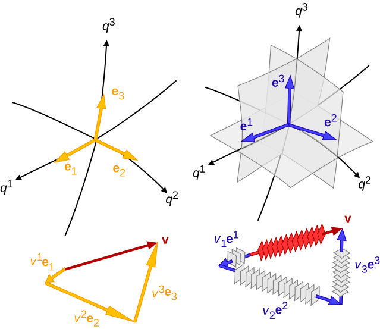

all articles
Lagrangian Mechanics
Table of Contents
- Overview
- Equation of Motion
- Principle of Stationary Action
- Euler-Lagrange Equation
- Relationship to Newton’s Second Law
- Applications
Overview
Equation of Motion
The equations of motion are foundational to our understanding of physics, describing how systems evolve over time under the influence of forces. In classical mechanics, Newton’s second law, $F=ma$, provides a straightforward yet powerful framework: it relates the motion of an object to the forces acting upon it, allowing us to predict trajectories and dynamics from the motion of planets to the flight of a baseball. However, as our understanding of physics deepened, the equations of motion took on even greater significance, revealing connections between seemingly disparate phenomena and embodying deeper principles about the universe.
Read more…Throwing at Wall
D. Morin 3.47
You throw a ball with speed $v_0$ at a vertical wall, a distance $l$ away. At what angle should you throw the ball so that it hits the wall as high as possible? Assume $l < v_0^2/g$.
In general,
$$y = y_0 + v_{0,y}t - \frac{1}{2}gt^2 = y_0 + v_{0}\cdot\sin(\phi)\cdot t - \frac{1}{2}gt^2$$ $$x = x_0 + v_{0,x}t = x_0 + v_{0}\cdot\cos(\phi)\cdot t$$
The time it takes to hit the wall is,
Read more…Logistic Map
Logistic Map
The famous logistic map is a recurrence relation or polynomial mapping of degree 2. It is a nonlinear difference equation capable of capturing complex nonlinear dynamical behavior including chaos. This map was popularized by the biologist Robert May in a Nature article written in 1976. Sadly, Robert May has passed away recently on April 28, 2020. The equation is as follows:
$$x_{n+1} = r x_n (1 - x_n)$$
The parameter $r$ controls the behavior of the system. It turns out that $r=3.6$ is starting to reach the point of chaos.
Read more…Logistic Growth Model
Logistic Growth Model
The simple difference equation below will show exponential growth behavior:
$$x_t = a x_{t-1}$$
However, it is often the case that a population cannot grow indefinitely but rather reach a population limit. This limit is called the population’s carrying capacity. To create a model with exponential growth but also incorporate this convergence to a population maximum limit, we may start with the following train of thought:
$$x_t = f(x_{t-1}) x_{t-1}$$
Read more…Optimizing Trajectory Angle
Introduction
I had the pleasure of teaching physics for the Pre First-Year Academic and Career Engagement (PREFACE) Program. These are students that graduated high school and are transitioning into college to study engineering. The following is a problem I gave my students as a challenge question on their final. Many students found this problem interesting and we had a long discussion about the power of learning theoretical mechanics for the future of their respective degrees.
Read more…Tensor Intro

Motivation:
- General Relativity
- Inertia Tensor
- Stress Tensor
It took me a whole week figure out what a tensor actually is. You will find many definitions and some are only partially correct. Let’s walk through the different explanations and learn how to think about them.
- (Array Definition) Tensor = Multi-dimensional array of numbers (scalars (rank 0), vectors (rank 1), matricies (rank 2), etc.). This is true in a sense but there is a truer geometrical meaning behind the concept of a tensor.
- (Coordinate Definition) Tensor = an object that is invariant under a change of coordinates and has components that change in a special, predictable way under a change of coordinates. This is also true but let’s dive even deeper to learn how a tensor allows this behavior to take place.
- (Abstract Definition) Tensor = a collection of vectors and covectors combined together using the tensor product
The important thing to keep in mind is that vectors exist independently of their components and their components depend on the coordinate system used to define vectors.
Read more…